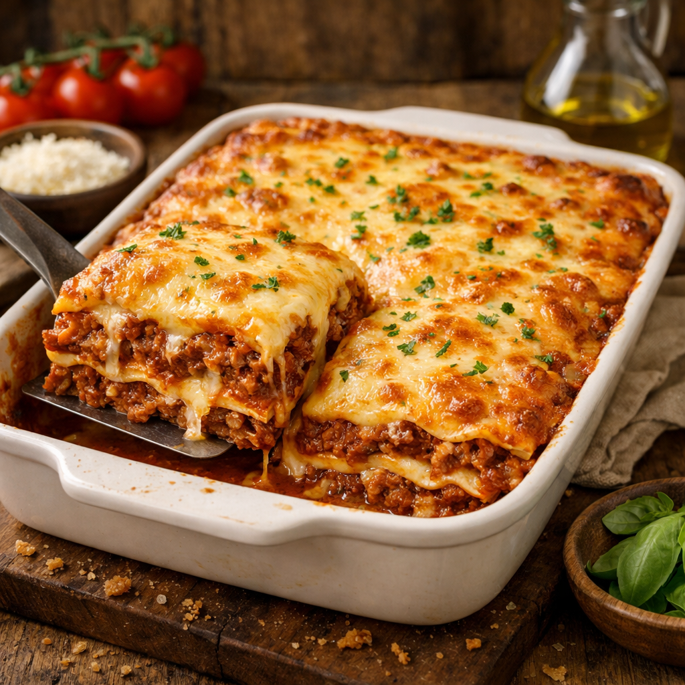

Lasanha à Bolonhesa

Ingredientes:
| Ingrediente | Quantidade | |
|---|---|---|
| Massa de Lasanha | 500g | |
| Carne moída | 500g | |
| Creme de Leite | 2 latas | |
| Manteiga | 3 colheres de sopa | |
| Farinha de | 3 colheres de sopa | Presunto | 500g |
| Mussarela | 500g | |
| Sal | a gosto | |
| Leite | 2 copos | |
| Alho e Cebola | a gosto | |
| Óleo | 3 colheres | |
| Molho de tomate | 1 lata |
Modo de Preparo:
- Passo 1: Lasanha
- Cozinhe a massa segundo as orientações do fabricante, despeje em um refratário com água gelada para não grudar.
- Passo 2: Molho à Bolonhesa
- Refogue o alho e a cebola, a carne moída,o molho de tomate, deixe cozinhar por 3 minutos e reserve.
- Passo 3: Molho Branco
- Derreta a manteiga, adicione a farinha de trigo e mexa até formar uma pasta.
- Despeje leite aos poucos, tempero a gosto e continue mexendo.
- Por último, coloque o creme de leite mexa por 1 minuto e desligue o fogo.
- Passo 4: Montagem
- Despeje um pouco do molho à Bolonhesa no fundo do refratário.
- Adicione uma camada de massa, uma camada de molho à Bolonhesa, uma camada de presunto, uma camada de mussarela, uma camada de molho branco.
- Repita as camadas até completar o refratário.
- Passo 5: Assar
- Leve ao forno alto (220ºC), pré-aquecido, por aproximadamente 20 minutos.